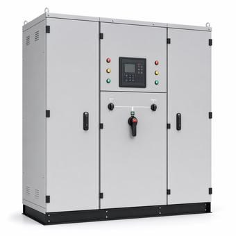

N+1 vs. 2N Redundancy Explained
The redundancy label is usually the first number in any data center power conversation. Here's what each one actually protects against, what it costs in installed capacity, and where the label stops telling the truth.

Key takeaways
- N+1 adds one spare unit to a single system and survives the loss of a component; 2N builds two independent systems and survives the loss of a whole path.
- Redundancy is per subsystem: a 2N UPS behind N+1 generators and a single utility feed is not a 2N facility.
- Keep A and B sides below half load each, and check what “2N+1” means, because it is used for two different designs.
On this page · 9 sections
N is the capacity the load needs, with nothing to spare. Every redundancy scheme is described relative to it. N+1 adds one spare unit to a single system. 2N builds two complete, independent systems, each able to carry the whole load alone. The difference sounds like a matter of quantity, but it's a difference in what can fail: N+1 survives the loss of a component, while 2N survives the loss of an entire path.
The notations
Exactly enough capacity for the load. Any failure, and any maintenance, affects the load.
One more unit than the load needs, in one system. Any single unit can fail or be taken out for service.
Two spare units in one system. One unit can be in maintenance while another fails.
Two independent systems (A and B), each sized for the full load. Normally each carries about half.
Two independent systems, each with its own spare unit.
Several systems sized so the load survives losing any one. With 4N/3, four systems share a load that any three can carry.
"2N+1" is used inconsistently. Some specifications mean 2(N+1), others mean 2N plus one shared spare. When a document uses it, check what it actually means before comparing designs.
What each scheme survives
| Event | N | N+1 | 2N |
|---|---|---|---|
| One unit fails | No | Yes | Yes |
| One unit in maintenance | No | Yes | Yes |
| Shared bus, switchboard or controls fail | No | No | Yes |
| Whole path out for maintenance | No | No | Yes |
| Failure on B while A is in maintenance | No | No | No* |
*Unless each side has its own spare: that's the case 2(N+1) exists for. The row that matters most is the third one. An N+1 UPS system still has a single output bus, a single paralleling control system and usually a single downstream switchboard. Any of those can take the whole system down, however many spare modules sit behind it.
What it costs: a worked example
A 900 kW critical load, built from 500 kW UPS modules:
| Scheme | Modules | Installed | Loading |
|---|---|---|---|
| N | 2 | 1,000 kW | 90% |
| N+1 | 3 | 1,500 kW | 60% |
| 2N | 2 + 2 | 2,000 kW | 45% each side |
| 2(N+1) | 3 + 3 | 3,000 kW | 30% each side |
Every figure is arithmetic. N needs 900 ÷ 500 = 1.8, so two modules. 2N doubles the whole system, so each side carries 450 kW of its 1,000 kW. With one module out, N+1 runs at 900 ÷ 1,000 = 90%, and so does each side of 2(N+1) with one module out while the other side is down.
Going from N+1 to 2N adds a module in this example, but the real cost is everything else that gets duplicated: the second output switchboard, a second set of distribution, and second feeders. Across switchgear, UPS and distribution, a 2N electrical design roughly doubles the line items of an N design of the same IT capacity.
2N only works to the rack if the load has two cords
Two independent systems protect the load only if the load can draw from both. Most IT equipment has dual power supplies, fed from separate A and B circuits. Each supply, and each circuit, has to carry the whole device on its own if the other side drops. In normal operation, neither side should be loaded past half of what it's allowed to carry. That is an operational discipline, not a design feature, and exceeding it silently turns a 2N room into one that trips when either side fails. Single-corded equipment needs a static transfer switch or rack transfer switch to get the same benefit.
Redundancy is per subsystem
A facility doesn't have one redundancy level. It has one per subsystem: utility feeds, generators, UPS, distribution, cooling. The weakest one sets what the facility can actually survive. N+1 generators feeding a single UPS path aren't N+1 overall, and a 2N UPS feeding a single cooling plant still depends on that plant. Cooling redundancy matters as much as electrical here: a lost chiller or CDU takes IT load down almost as reliably as a lost UPS, only more slowly.
How this relates to tiers
Data center tier and rating systems (the Uptime Institute Tier Standard, and ANSI/TIA-942 ratings) are defined by outcomes, not by notations. Concurrent maintainability means any component or path can be taken out for planned work without affecting the load. Fault tolerance means the load survives an unplanned failure of any single component or path. A 2N design is a common route to fault tolerance, but the label alone guarantees neither. A shared control system, a common upstream breaker or a single fuel supply can defeat it.
Choosing between N+1 and 2N
- N+1 suits loads that can tolerate a rare outage from a shared-component failure, or that have redundancy at a higher level, such as workloads replicated across sites. It installs the least spare capacity and runs at the highest utilization.
- 2N suits loads where any outage is costly, and where planned maintenance must never need a shutdown window. It needs dual-corded load, or transfer switches, and disciplined A/B loading.
- 2(N+1) covers the one case 2N doesn't: a failure on one side while the other is in maintenance. It's also the most expensive.
- Distributed schemes such as 4N/3 get survival of any single-system loss with less installed capacity than 2N. Four systems at 75% load is 1.33× the load installed, against 2.0× for 2N. The cost is more complex load assignment and transfer arrangements.
Common mistakes
- Counting spare modules and calling it fault tolerant. N+1 modules on a single output bus don't survive a bus fault.
- Mixing redundancy levels without saying so. A 2N UPS behind N+1 generators behind a single utility feed is not a 2N facility.
- Loading A and B sides past half. It works every day until the day one side is lost.
- Forgetting cooling. Electrical redundancy is only as good as the thermal plant it keeps running.
- Reading 2N+1 without checking which one it means. The term is used for two different designs.
Frequently asked questions
What does N+1 mean in a data center?
N is the capacity the load needs. N+1 means one more unit is installed than the load requires, so any single unit, such as a UPS module, generator or cooling unit, can fail or be serviced without affecting the load.
Is 2N better than N+1?
2N tolerates more: the loss of an entire path, including a shared bus or switchboard, and maintenance on a whole side without a shutdown. N+1 tolerates only the loss of a single unit. 2N costs more in installed capacity and runs each side at half load or less.
What is 2N+1 redundancy?
The term is used inconsistently. Some specifications mean 2(N+1), two independent systems each with its own spare unit. Others mean 2N plus one shared spare. Check which a document means before comparing designs.
Does a 2N design make a data center fault tolerant?
Not by itself. Fault tolerance means the load survives the failure of any single component or path. A 2N UPS can still be defeated by a shared control system, a common upstream breaker, single-corded loads, or a cooling plant that isn't redundant.
Next steps
The POD & Skid Designer lets you set a load and a redundancy target (N, N+1 or 2N) and checks a power block's equipment against it. The data center power page puts redundancy in context with the rest of the electrical design.
Run the numbers
- Size a power POD — or the skid underneath it.Set a load and N, N+1 or 2N, pick equipment, and check the power block instantly.
- Generator Runtime CalculatorFuel burn and runtime at a given load.
- Transformer Sizing CalculatorkW load to the next standard kVA nameplate.
Read next
- How to Size a UPSApplying N+1 and 2N to real module counts, including the kVA check
- Liquid vs. Air Cooling for AI RacksThe thermal side, where redundancy matters as much as electrical
- Metal-Clad vs. Metal-Enclosed SwitchgearThe draw-out gear that makes concurrent maintenance practical
Equipment
- Data Center Backup PowerThe UPS and generator families redundancy is counted in.
- Data Center Power DistributionBusway, PDUs and the A/B distribution that carries 2N to the rack.
- Data Center SwitchgearThe shared buses and switchboards that decide what N+1 really survives.
Cite or link to this guide
Free to quote with attribution. Suggested citation: Voltfield Editorial Team, “N+1 vs. 2N Redundancy Explained,” Voltfield, updated September 29, 2026. https://voltfield.org/guide-n-plus-1-vs-2n-redundancy.html
Get new guides by email
One short email when a new guide or calculator is published, at most once a month. Your address is used for nothing else.